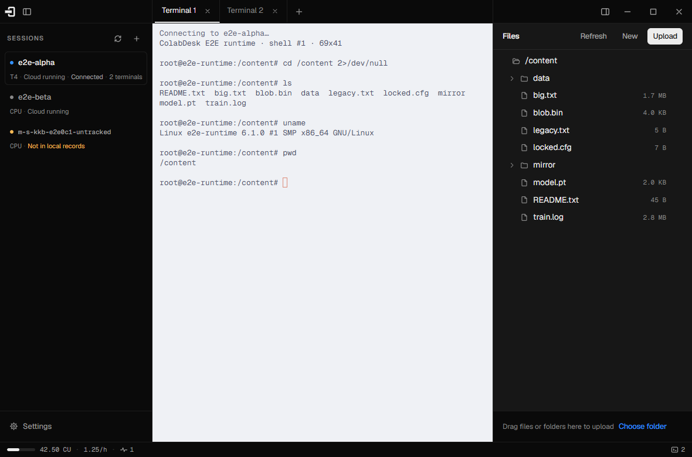
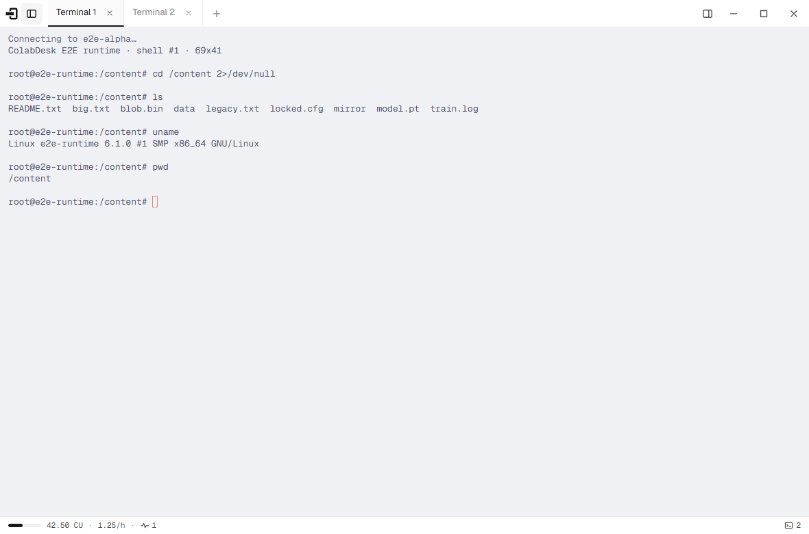
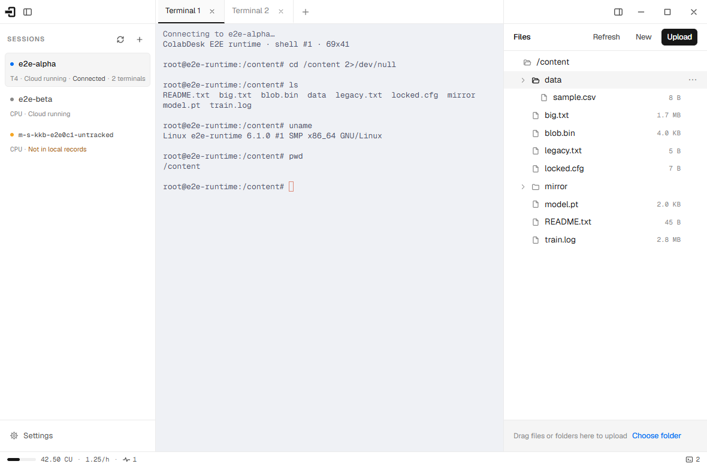
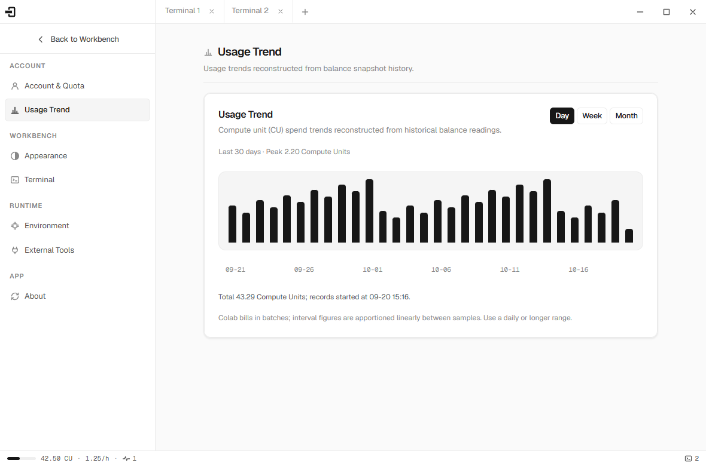

A desktop SSH console for Google Colab runtimes.
SSH in, work in a real terminal, browse the runtime's files over SFTP, and watch the compute units it is spending — in one window.

What it does
Terminal
Many tabs per runtime over one SSH connection — search, clickable links, ten palettes that follow the light/dark theme.

Files
The runtime's filesystem as a tree: drag to upload files or whole folders, download, delete, with progress and cancel.

Quota
Balance, spend rate, projected hours, and a day/week/month trend built from readings the app records.
